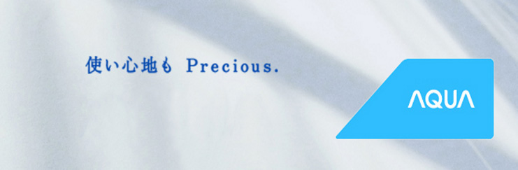

AQUA进入AQUA网站
品牌历史
“AQUA”源于意大利语，本意为“水”。AQUA诞生于琵琶湖畔的滋贺县。琵琶湖是日本最大的淡水湖。AQUA从研发部门到普通员工，都非常重视保护琵琶湖水的洁净，这已成为一种使命。从2001年电解水洗涤，到2006年臭氧洗涤，通过独创的技术，重视环境保护的理念一脉相承。
2006年AQUA诞生。搭载全球首创的独有技术和独有功能，以“珍惜水源的洗衣机”为理念，AQUA应运而生。
AQUA代表的是三洋电机洗衣机事业。AQUA品牌作为三洋电机的洗衣机子品牌推出虽仅数年时间，但它代表的是三洋电机洗衣机事业50多年的辉煌历史------
日本第一：1953年首创喷流式洗衣机。1966年首创洗干一体机。1971年首创投币式自主洗衣机，推动洗衣机经济成长。
世界第一：1960年首创双桶洗衣机。1972年首创满水感应。1995年首创洗澡水净化利用水泵。1998年首创超音波洗涤。1999年首创斜式滚筒。2001年首创电解水洗衣，不用洗涤剂。
品牌理念
Authentic Question Unique Answer
以独特技术解决根本性课题
品牌内涵
持续创造独特家电的品牌。
以划时代的功能与设计，不断拓展家务的可能。
并赋予全家人跃跃欲试的期待，共同参与到家务之中。
以独一无二的视角与构思，
满足使用者的期待，并超越想象。
这，就是AQUA
品牌SLOGAN
Life is Precious.
人生珍贵。
这样理所当然的道理，
却常常在纷繁的日常中被轻易遗忘。
我们一直坚信，
越是平淡无奇的日常生活，
越应该被视为珍宝。
为珍惜每一天生活的人们。
进入AQUA网站